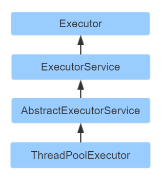
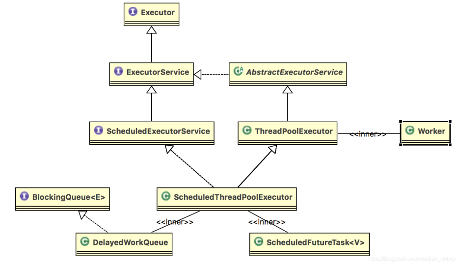
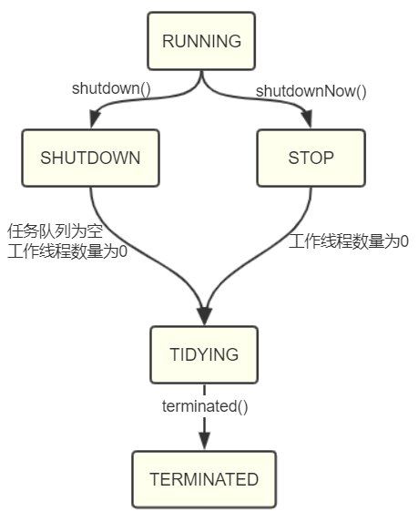
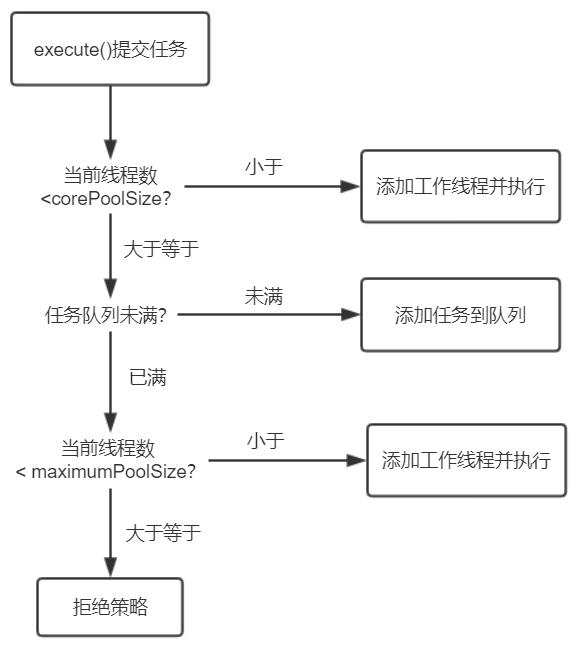

java_并发编程11线程池¶
并发编程可以高效利用CPU资源，提升任务执行效率，但是多线程及线程间的切换也伴随着资源的消耗。当遇到单个任务处理时间比较短，但需要处理的任务数量很大时，线程会频繁的创建销毁，大量的时间和资源都会浪费在线程的创建和销毁上，效率很低。
这个时候就需要用的线程池了，线程作为一个工作者，线程执行完一个任务之后不销毁，而是继续执行其他的任务。
Executor框架¶
Java 里面线程池的顶级接口是 Executor,但是严格意义上讲Executor 并不是一个线程池,而只是一个执行线程的工具。真正的线程池接口是 ExecutorService。
通过 Executor 来启动线程比使用 Thread 的 start 方法更好，除了更易管理，效率更好（用线程池实现，节约开销）外，还有关键的一点：有助于避免 this 逃逸问题——如果我们在构造器中启动一个线程，因为另一个任务可能会在构造器结束之前开始执行，此时可能会访问到初始化了一半的对象用 Executor 在构造器中。
Executor框架提供了一种“任务提交”与“任务如何运行”分离开来的机制，实现对异步任务的控制与执行。我们先大概了解下每个类的基本情况。

Executor 框架包括：线程池，Executor，Executors，ExecutorService，CompletionService，Future，Callable 等。
ExecutorService 的生命周期包括三种状态：运行、关闭、终止。创建后便进入运行状态，当调用了 shutdown（）方法时，便进入关闭状态，此时意味着ExecutorService 不再接受新的任务，但它还在执行已经提交了的任务，当素有已经提交了的任务执行完后，便到达终止状态。如果不调用 shutdown（）方法，ExecutorService 会一直处在运行状态，不断接收新的任务，执行新的任务，服务器端一般不需要关闭它，保持一直运行即可。
JDK中线程池相关接口与类的关系¶

线程池的优势¶
- 降低资源消耗。通过重复利用已创建的线程降低线程创建和销毁造成的消耗；
- 提高响应速度。当任务到达时，任务可以不需要的等到线程创建就能执行；
- 提高线程的可管理性。线程是稀缺资源，如果无限制的创建，不仅会消耗系统资源，还会降低系统的稳定性，不是线程越多越好。使用线程池可以进行统一的分配，调优和监控。
线程池状态¶
RUNNING ：能接受新提交的任务，并且也能处理阻塞队列中的任务；
SHUTDOWN：关闭状态，不再接受新提交的任务，但却可以继续处理阻塞队列中已保存的任务。在线程池处于 RUNNING 状态时，调用 shutdown()方法会使线程池进入到该状态。（finalize() 方法在执行过程中也会调用- shutdown()方法进入该状态）；
STOP：不能接受新任务，也不处理队列中的任务，会中断正在处理任务的线程。在线程池处于 RUNNING 或 SHUTDOWN 状态时，调用 shutdownNow() 方法会使线程池进入到该状态；
TIDYING：如果所有的任务都已终止了，workerCount (有效线程数) 为0，线程池进入该状态后会调用 terminated() 方法进入TERMINATED 状态。
TERMINATED：在terminated() 方法执行完后进入该状态，默认terminated()方法中什么也没有做。进入TERMINATED的条件如下：
线程池不是RUNNING状态；
线程池状态不是TIDYING状态或TERMINATED状态；
如果线程池状态是SHUTDOWN并且workerQueue为空；
workerCount为0；
设置TIDYING状态成功。

线程池核心参数¶
corePoolSize： 核心线程数量；
maximumPoolSize： 最大线程数量；
workQueue： 等待队列，当线程池中的线程数量大于等于corePoolSize时，把该任务放入等待队列；
keepAliveTime： 线程池维护线程所允许的空闲时间。当线程池中的线程数量大于corePoolSize时，核心线程外的线程空闲时间超过keepAliveTime就会销毁；
unit： keepAliveTime的时间单位；
threadFactory： 用于创建新线程。默认使用Executors.defaultThreadFactory() 来创建线程。Executors.defaultThreadFactory() 创建的线程优先级都是NORM_PRIORITY；
handler： RejectedExecutionHandler类型的变量，表示线程池的拒绝策略。当阻塞队列满了并且没有空闲的线程时，如果继续提交任务，就需要采取一种策略处理该任务。线程池提供以下拒绝策略：
01,AbortPolicy：直接抛出异常，默认策略；
02,CallerRunsPolicy：用调用者所在的线程来执行任务；
03,DiscardOldestPolicy：丢弃阻塞队列中靠最前的任务，并执行当前任务；
04,DiscardPolicy：直接丢弃任务；
05,实现自己的拒绝策略，实现RejectedExecutionHandler接口重写rejectedExecution方法即可。
线程池任务提交过程¶

任务提交的顺序为 corePoolSize –> workQueue –> maximumPoolSize -> handler。
如果运行的线程数少于 corePoolSize，则创建新线程来处理任务，即使线程池中的其他线程是空闲的；
如果运行的线程数大于等于 corePoolSize，则将任务放入workQueue中，等待有空闲的线程去从workQueue中取任务并处理；
当workQueue已经满时，如果运行的线程数小于maximumPoolSize，则创建新的线程去处理提交的任务；
当workQueue已经满时，如果运行的线程数大于等于maximumPoolSize且没有空闲线程，则通过handler所指定的拒绝策略来处理任务。
线程池中的线程执行完当前任务后，会循环到任务队列中取任务继续执行；线程获取队列中任务时会阻塞，直到获取到任务返回；当线程数大于corePoolSize且线程阻塞时间超时，线程就会被销毁。
线程池创建¶
| 线程池 | 特点 | 建议使用场景 | | ———————- | ——————————————————————— | ————————————————————- | | newCachedThreadPool | 1、线程数无上限 2、空闲线程存活60s 3、阻塞队列 | 1、任务执行时间短 2、任务要求响应时间短 | | newFixedThreadPool | 1、线程数固定 2、无界队列 | 1、任务比较平缓 2、控制最大的线程数 | | newScheduledThreadPool | 核心线程数量固定、非核心线程数量无限制（闲置时马上回收） | 执行定时 / 周期性 任务 | | newSingleThreadExecutor | 只有一个核心线程（保证所有任务按照指定顺序在一个线程中执行，不需要处理线程同步的问题） | 不适合并发但可能引起IO阻塞性及影响UI线程响应的操作，如数据库操作，文件操作等 |
newCachedThreadPool()¶
缓存型池子，先查看池中有没有以前建立的线程，如果有，就 reuse 如果没有，就建一个新的线程加入池中
缓存型池子通常用于执行一些生存期很短的异步型任务 因此在一些面向连接的 daemon 型 SERVER 中用得不多。但对于生存期短的异步任务，它是 Executor 的首选。
能 reuse 的线程，必须是 timeout IDLE 内的池中线程，缺省 timeout 是 60s,超过这个 IDLE 时长，线程实例将被终止及移出池。
注意，放入 CachedThreadPool 的线程不必担心其结束，超过 TIMEOUT 不活动，其会自动被终止。
newFixedThreadPool(int)¶
newFixedThreadPool 与 cacheThreadPool 差不多，也是能 reuse 就用，但不能随时建新的线程。
其独特之处:任意时间点，最多只能有固定数目的活动线程存在，此时如果有新的线程要建立，只能放在另外的队列中等待，直到当前的线程中某个线程终止直接被移出池子。
和 cacheThreadPool 不同，FixedThreadPool 没有 IDLE 机制（可能也有，但既然文档没提，肯定非常长，类似依赖上层的 TCP 或 UDP IDLE 机制之类的），所以 FixedThreadPool 多数针对一些很稳定很固定的正规并发线程，多用于服务器。
从方法的源代码看，cache池和fixed 池调用的是同一个底层 池，只不过参数不同:
fixed 池线程数固定，并且是0秒IDLE（无IDLE）。
cache 池线程数支持 0-Integer.MAX_VALUE(显然完全没考虑主机的资源承受能力），60 秒 IDLE 。
SingleThreadExecutor()¶
单例线程，任意时间池中只能有一个线程
用的是和 cache 池和 fixed 池相同的底层池，但线程数目是 1-1,0 秒 IDLE（无 IDLE）
一般来说，CachedTheadPool 在程序执行过程中通常会创建与所需数量相同的线程，然后在它回收旧线程时停止创建新线程，因此它是合理的 Executor 的首选，只有当这种方式会引发问题时（比如需要大量长时间面向连接的线程时），才需要 考虑用 FixedThreadPool。（该段话摘自《Thinking in Java》第四版）
几种排队的策略¶
直接提交。缓冲队列采用 SynchronousQueue，它将任务直接交给线程处理而不保持它们。如果不存在可用于立即运行任务的线程（即线程池中的线程都在工作），则试图把任务加入缓冲队列将会失败，因此会构造一个新的线程来处理新添加的任务，并将其加入到线程池中。直接提交通常要求无界 maximumPoolSizes（Integer.MAX_VALUE） 以避免拒绝新提交的任务。newCachedThreadPool 采用的便是这种策略。
无界队列。使用无界队列（典型的便是采用预定义容量的 LinkedBlockingQueue，理论上是该缓冲队列可以对无限多的任务排队）将导致在所有 corePoolSize 线程都工作的情况下将新任务加入到缓冲队列中。这样，创建的线程就不会超过 corePoolSize，也因此，maximumPoolSize 的值也就无效了。当每个任务完全独立于其他任务，即任务执行互不影响时，适合于使用无界队列。newFixedThreadPool采用的便是这种策略。
有界队列。当使用有限的 maximumPoolSizes 时，有界队列（一般缓冲队列使用 ArrayBlockingQueue，并制定队列的最大长度）有助于防止资源耗尽，但是可能较难调整和控制，队列大小和最大池大小需要相互折衷，需要设定合理的参数。
线程池易出现问题¶
使用线程池容易出现的问题
| 现象 | 原因 | | — | — | | 整个系统影响缓慢，大部分504 | 1、为设置最大的线程数，任务积压过多，线程数用尽 | | oom | 1、队列无界或者size设置过大 | | 使用线程池对效率并没有明显的提升 | 1、线程池的参数设置过小，线程数过小或者队列过小，或者是服务器的cpu核数太低 |
线程池的监控和原理¶
线程池的监控
为什么要对线程池进行监控
线程池中线程数和队列的类型及长度对线程会造成很大的影响，而且会争夺系统稀有资源，线程数。设置不当，或是没有最大的利用系统资源，提高系统的整体运行效率，或是导致整个系统的故障。典型的场景是线程数被占满，其他的请求无响应。或是任务积压过多，直接oom
方便的排查线程中的故障以及优化线程池的使用
监控的原理
另起一个定时单线程数的线程池newSingleThreadScheduledExecutor
调用scheduleAtFixedRate(Runnable command,long initialDelay,long period,TimeUnit unit)定时执行监控任务;
定时任务内 通过ThreadPoolExecutor对象获取监控的对象信息，比如t线程池需要执行的任务数、线程池在运行过程中已完成的任务数、曾经创建过的最大线程数、线程池里的线程数量、线程池里活跃的线程数量、当前排队线程数
根据预设的日志或报警策略，进行规则控制
需注意事项¶
线程数要合理设置，一般建议值是核数的2倍。
线程池队列的类型和长度要根据业特性合理设置
不同的业务需要线程池隔离，避免相互影响
未每个线程池增加特有的命名规范以及关键的日志，方便出问题排查和优化
其他问题¶
用多线程的目的是什么？¶
充分利用 CPU 资源，并发做多件事。
单核 CPU 机器上适不适合用多线程？¶
适合，如果是单线程，线程中需要等待 IO 时，此时 CPU 就空闲出来了。
线程什么时候会让出 CPU？¶
阻塞时，wait，await，等待IO，sleep，yield，执行结束了。。
线程是不是越多越好？¶
造卡车（线程）要不要时间？一次使用，用完了得销毁，销毁要不要耗时间？
1、线程在java中是一个对象，每一个java线程都需要有一个操作系统线程支持。线程创建、销毁需要时间。如果 创建时间+销毁时间 > 执行任务时间 就很不合算。
2、java对象占用堆内存，操作系统线程占用系统内存，根据 jvm 规范，一个线程默认最大栈大小 1M，这个栈空间是需要从系统内存中分配的。
3、操作系统需要频繁切换线程上下文（大家都想被运行），影响性能。
参考¶
并发编程之线程池进程池:https://www.cnblogs.com/plf-Jack/p/11139895.html
Java并发编程之线程池:https://www.imooc.com/article/details/id/288318
并发新特性—Executor 框架与线程池:https://wiki.jikexueyuan.com/project/java-concurrency/executor.html
【原创】Java并发编程系列33 | 深入理解线程池（上）：https://cloud.tencent.com/developer/article/1688719
Java并发编程系列34｜深入理解线程池（下）：https://baijiahao.baidu.com/s?id=1685500742240279250&wfr=spider&for=pc
线程池的使用：https://www.ppkanshu.com/index.php/post/2483.html
java newCachedThreadPool 线程池使用在什么情况下?：https://www.zhihu.com/question/23212914
并发编程：线程池的使用：http://www.qishunwang.net/news_show_49703.aspx
Java并发编程正确打开线程池的方式：https://baijiahao.baidu.com/s?id=1659586116326532964&wfr=spider&for=pc
Java多线程并发编程-线程池；https://blog.csdn.net/yangwei234/article/details/89245605